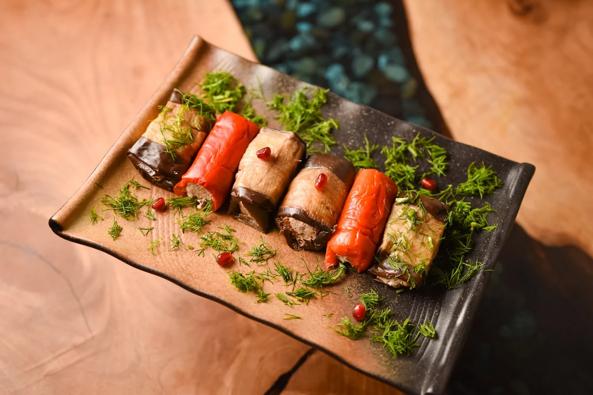
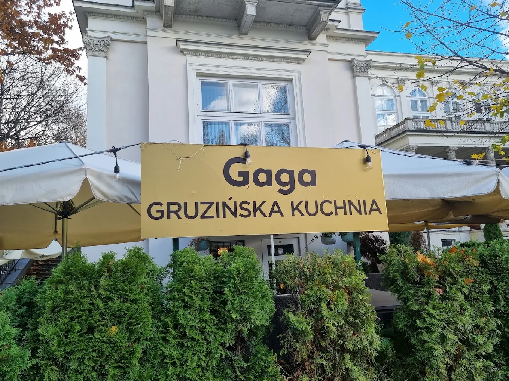

Bestseller
Bestseller
აჭარული ხაჭაპური
Chaczapuri po adżarsku
Łódka z chrupiącego ciasta wypełniona roztopionym serem, podawana z jajkiem. Nasz bestseller.
Autentyczna kuchnia gruzińska · Warszawa
Chaczapuri, chinkali, szaszłyki z grilla, gruzińskie wino i muzyka na żywo — naprzeciwko Ambasady USA, przy Al. Ujazdowskich.
Godziny
Pon – Nd · 11:00 – 23:00
Muzyka na żywo i tańce w weekendy
Nasza kuchnia
Klasyki, po które goście wracają najczęściej — przygotowywane zgodnie z gruzińską tradycją.
Bestseller
აჭარული ხაჭაპური
Łódka z chrupiącego ciasta wypełniona roztopionym serem, podawana z jajkiem. Nasz bestseller.

ხინკალი
Gruzińskie pierożki z soczystym nadzieniem i bulionem w środku — m.in. z wołowiną, baraniną, indykiem, serem lub łososiem.

ბადრიჯანი ნიგვზით
Roladki z bakłażana z sosem orzechowym, bakłażana z serem i papryki z sosem orzechowym.

ორაგული
Dla tych, którzy zamiast mięsa wolą rybę — łosoś z gruzińskiej karty Gagi.
Nasza historia
Gruzińska gościnność przy Al. Ujazdowskich, naprzeciwko Ambasady USA.


Al. Ujazdowskie 6AWarszawa
Witaj w Gadze — gruzińskiej restauracji w samym sercu Warszawy, przy jednej z najpiękniejszych alei miasta.
Gotujemy zgodnie z gruzińską tradycją i z sercem, które czuć w każdym daniu. W karcie znajdziesz chaczapuri w kilku odsłonach, chinkali z różnymi nadzieniami, szaszłyki i dania z grilla, a do tego gruzińskie wino — z kraju o jednej z najstarszych tradycji winiarskich na świecie.
Wnętrze zaprasza, żeby zostać dłużej — miękkie welurowe kanapy, ciepłe światło lamp i stary zegar, który nikogo tu nie pogania. Do dyspozycji gości jest też ogródek wśród zieleni Al. Ujazdowskich.
W weekendy robi się głośniej: gra muzyka na żywo, a na sali rusza tradycyjny gruziński taniec. Bo w Gruzji wspólny stół to coś więcej niż posiłek — to supra, uczta, na której każdy gość jest darem od Boga.
4,6★
ocena w Google
ponad 1600 opinii
7
dni w tygodniu
od 11:00 do 23:00
2–30
osób w jednej
rezerwacji online
4
lokale Gagi
w Warszawie
სტუმარი ღვთისაა
„Gość jest darem od Boga”
— gruzińskie przysłowie
Wieczory w Gadze
W weekendy Gaga zamienia się w gruzińską suprę — ucztę, przy której nikt nie siedzi długo w miejscu.
Grają muzycy na żywo, a na sali rusza tradycyjny gruziński taniec. Aktualne wydarzenia i nagrania z wieczorów znajdziesz na naszym Instagramie.
Muzyka na żywo
W weekendowe wieczory
Tańce gruzińskie
Tradycyjne tańce na sali
Aktualny program
Opinie gości
Ponad 1600 opinii w Google — dziękujemy za każdą z nich.
★★★★★
„Ledwo stamtąd wyszliśmy… bo tak się najedliśmy. Przepyszne jedzenie i bardzo syte porcje.”
★★★★★
„Pyszne jedzonko gruzińskie. Falafel przedni, kebab klasyczny z jagnięciny nieziemsko przyprawiony.”
Rezerwacja
Stolik czeka. Wybierz dzień, godzinę i liczbę gości — dokończysz rezerwację w serwisie MojStolik.pl.
Rezerwacje dla 2–30 osób przyjmujemy przez MojStolik.pl. Potwierdzamy je na bieżąco w godzinach pracy restauracji.
W weekendy sala zapełnia się szybko — rezerwuj z wyprzedzeniem.
Mamy prywatną salę i ogródek. Przy większej grupie zaznacz to w uwagach do rezerwacji.
Jak do nas trafić
Al. Ujazdowskie, naprzeciwko Ambasady USA — kilka minut spacerem od Placu Trzech Krzyży.
Godziny otwarcia
Rezerwacje
MojStolik.plTelefon
726 504 760Zamów z dostawą
Obserwuj nas
Al. Ujazdowskie 6A
Mapa Google załaduje się po kliknięciu. Google otrzyma wtedy Twój adres IP.
lub otwórz w Mapach Google